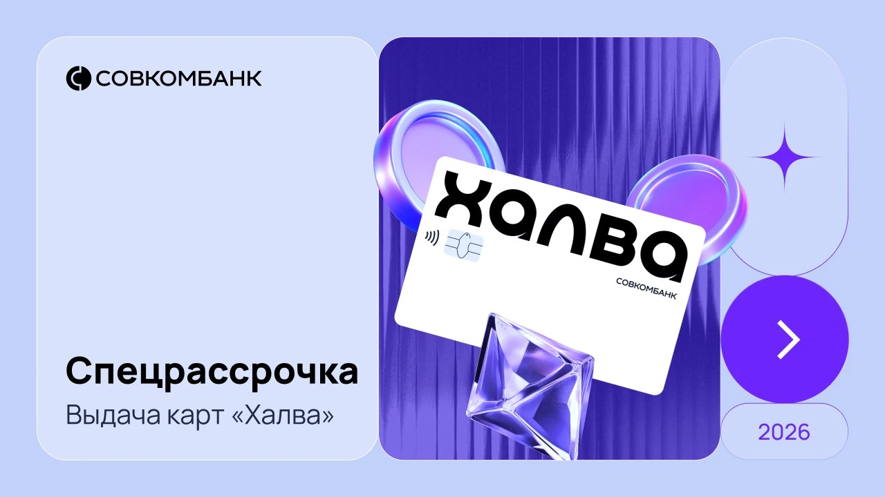
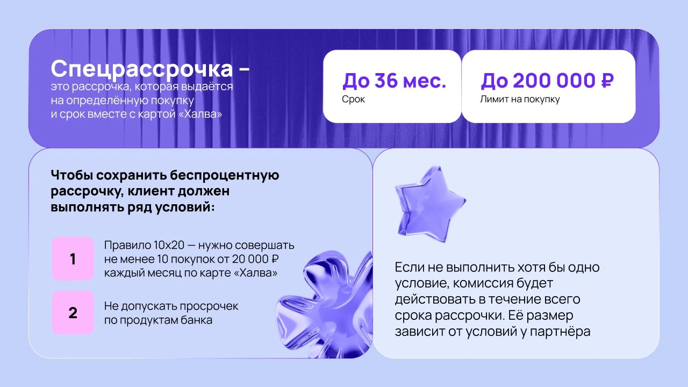
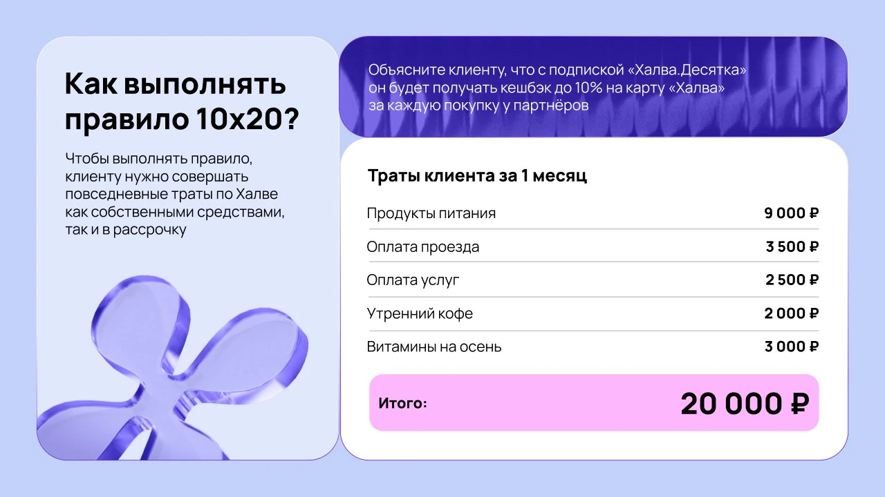
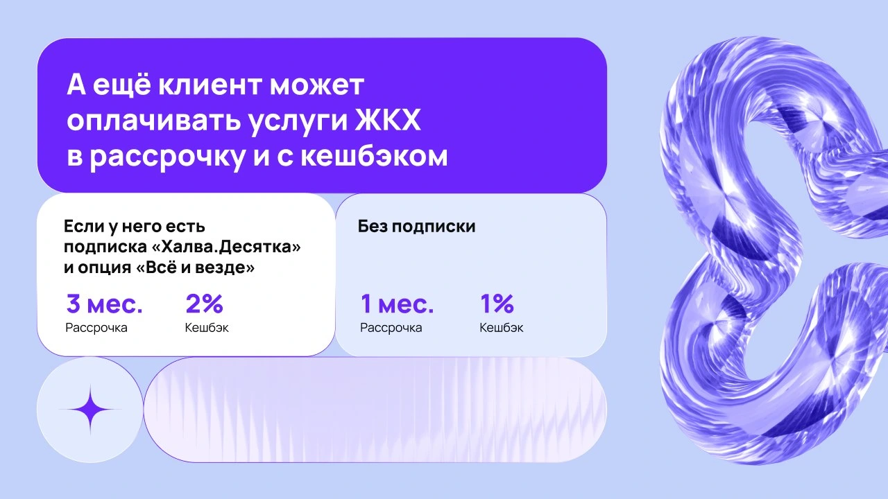
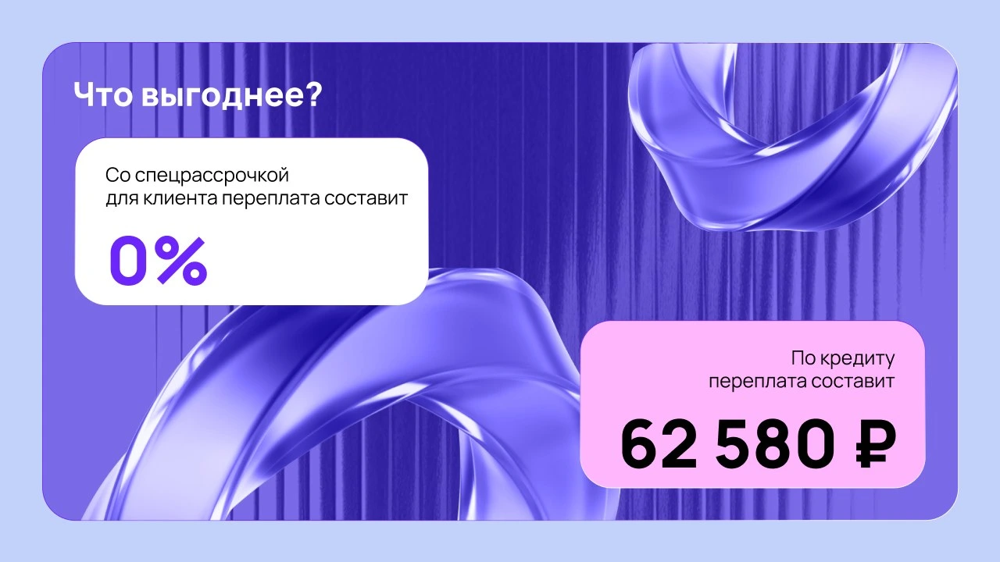
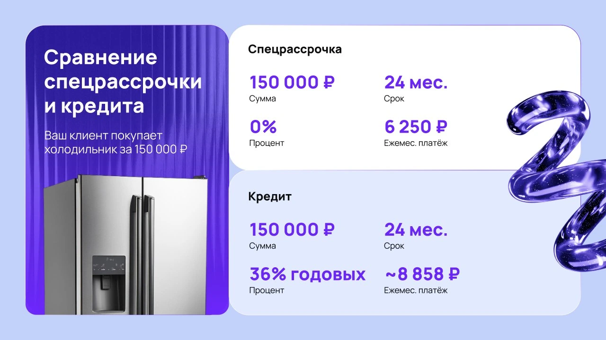
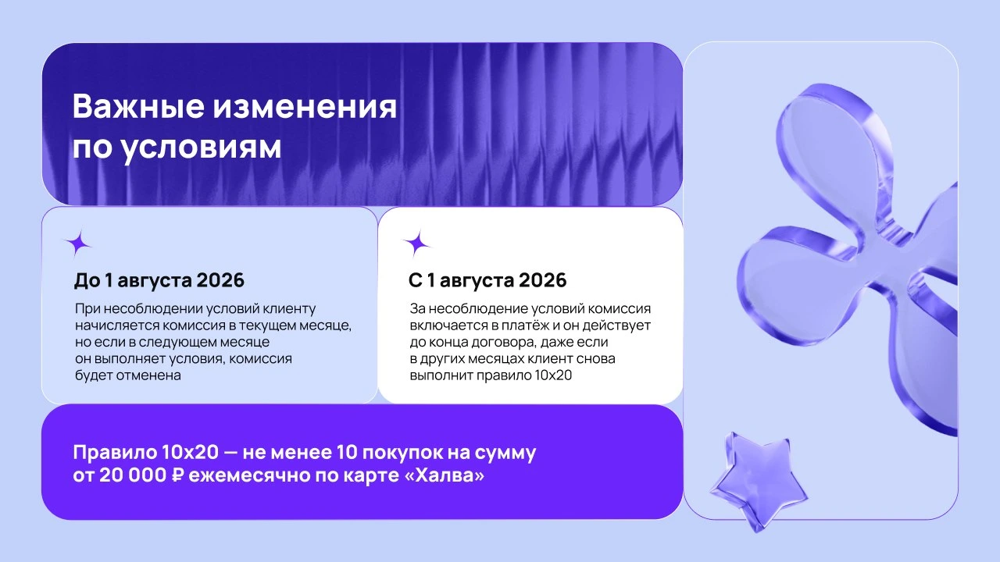

Как мы собираем
презентации с ИИ
За семь недель команда разобрала архив слайдов, собрала шаблоны и проверила, как Claude и ОВИ справляются с реальными задачами.
В кастомных деках повторяются одни и те же слайды
В архиве B2B примерно 70–80% слайдов в кастомных презентациях повторяли типовые: таблицы, графики, KPI и планы. Своё оформление чаще требовалось обложкам, разделителям, лозунгам и коллажам.
Отсюда рабочая оценка: 25–30 мастер-макетов хватит для типового ядра. В архиве при этом нашли 43 типа слайдов.
- 3 034 ч
- Учтено в 216 задачах на презентации с января по 11 сентября 2026 года.
- 14 ч
- В среднем заняла одна задача по данным этой выгрузки.
- 1 551
- Слайды 16:9 из архива B2B за 2024–2026.
Источники: выгрузка YouTrack от 11.09.2026, без эпиков; аудит архива B2B в Figma от 21.10.2026.
Каждому типу слайда дали своё место
В «Лиге Приключений 2026» обложки, таблицы, статистика и финальные слайды лежат в отдельных секциях. Когда в задаче нужна таблица, Claude может взять готовый макет из нужной секции.
К 3 ноября через скиллы собирали семь шаблонов. Для СКБ Бизнес и СКБ Розницы подготовили по 90 типовых слайдов, для зарплатного проекта — 32.







Как Claude собирает слайды в Figma
Дизайнер передаёт исходник и выбирает шаблон. В скилле записаны типы слайдов, сетка, шрифты и правила направления. По ним Claude выбирает кадры и переносит текст.
- 01
Задача
Текст, DOCX или черновик в PPTX.
- 02
Шаблон
Типы слайдов, сетка и материалы направления.
- 03
Сборка
Claude копирует кадры в Figma и переносит текст.
- 04
Проверка
Дизайнер сверяет текст, переносы и наложения.
- 05
Выгрузка
После правок дизайнер сохраняет PDF или PPTX.
Семь недель работы
В Claude уходит копия с масками
Перед вёрсткой приложение в ОВИ заменяет реальные значения и названия. Claude собирает обезличенный дек. После вёрстки плагин в Figma возвращает значения и перестраивает графики.
30 октября команда проверила полный цикл на деке из 25 слайдов: плагин вернул 266 замен. В отчёте остались два вопроса: обрывы связи в ОВИ и длина подменных значений.
Один макет, три состояния
На вымышленных данных
Исходные значения находятся в рабочем файле.
По итогам теста ОВИ готовил структуру, Claude собирал макет
Claude
Собирал слайды из шаблона в Figma и проверял макет по скриншотам. Работал с подменными данными, потому что обработка шла во внешнем облаке.
ОВИ
В тесте извлекал текст, шрифты, цвета и размеры внутри банка. Результат вёрстки команда считала черновиком: в одном тесте ОВИ взял фон гайдбука вместо стиля презентации.
На следующую неделю запланировали тесты на облегчённых шаблонах, ещё один прогон обезличивания и отдельный трек для кастомных презентаций. Перед выпуском дизайнер проверяет факты, права на материалы и итоговый макет.
Срез на 3 ноября 2026 года. Основа: «ИИ-стрим презентаций», 4 ноября 2026 ↗.